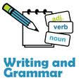

AUTOMATED ESSAY GRADER

Overall Score
| GRADE (0-5) | 3.50 |
|---|---|
| Spelling(0-5) | 5.00 |
| Grammar(0-5) | 1.00 |
| Coherence(0-5) | 4.50 |

Essay Statistics
| Word Count | 113 |
|---|---|
| Sentence Count | 1 |
| Paragraph Count | 2 |
| Average Sentence Length | 113.00 |
| Standard Deviation from the Average Sentence Length | 0.00 |

Spellings
Number of Misspelt Words ::0
Score :: 5.00
| Misspelt Word | Spelling Suggestions |
|---|

Grammar
Score :: 1.00
| Sentences | Score |
|---|---|
| My Favorite Entertainment Skating I like playing sports, but I enjoy skating the most, because skating is a good way to relax as well as a good way to keep fit and healthy.I began to learn how to skate when I was ten years old.Now I'm very good at skating.When I skate, I can leave behind all unpleasant things and just enjoy it.Thus, skating can not just relieve me from heavy stress, but also improve my quality of life.Every time, I feel pleasant and energetic after skating.Owing to skating, I become stronger and healthier.With a strong body, I'm able to do my work better. | 1 |

Coherence
Score :: 4.50

Essay
My Favorite Entertainment SkatingI like playing sports, but I enjoy skating the most, because skating is a good way to relax as well as a good way to keep fit and healthy.I began to learn how to skate when I was ten years old.Now I'm very good at skating.When I skate, I can leave behind all unpleasant things and just enjoy it.Thus, skating can not just relieve me from heavy stress, but also improve my quality of life.Every time, I feel pleasant and energetic after skating.Owing to skating, I become stronger and healthier.With a strong body, I'm able to do my work better.
Karthik R Prasad, Aparna N, Apoorva Rao B
Guide: Dr.B Narsing Rao
Guide: Dr.B Narsing Rao